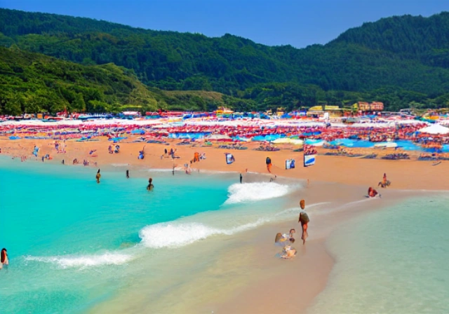
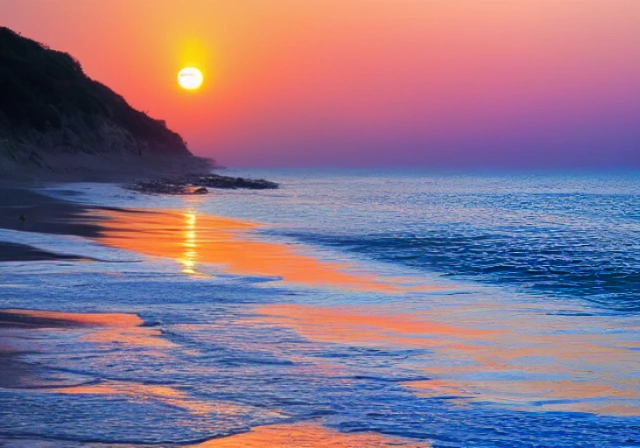

Bagni Fiume is a beautiful Italian beach located on the coast of the Adriatic Sea. With its crystal clear waters and pristine sandy shores, it is the perfect destination for a relaxing getaway.
Bagni Fiume offers a range of amenities and services to ensure a comfortable and enjoyable experience for visitors. From beachside restaurants serving delicious Italian cuisine to water sports activities for the adventurous, there is something for everyone.
For inquiries or reservations, please contact our friendly staff: